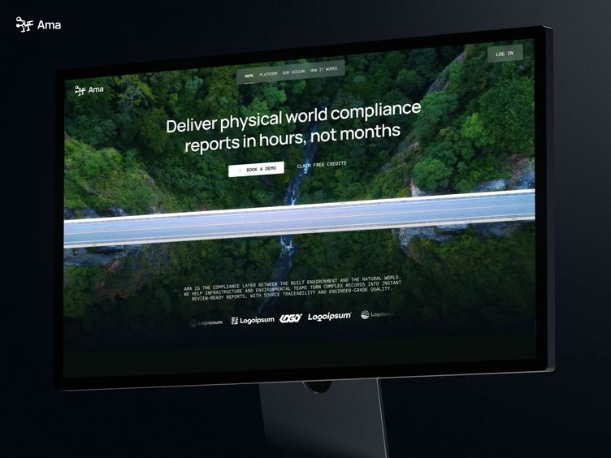

Environmental Software Website Design – Ama Earth
by Phenomenon Labs for Phenomenon Studio
SaaSSaaS
环境合规软件 Ama Earth 官网：整屏航拍森林与公路作底，大标题“Deliver physical world compliance reports in hours, not months.”，下方 BOOK A DEMO 与 CLAIM FREE CREDITS 两个入口；合规工具用“一幅航拍大图 + 一句几小时出报告”把枯燥的环境合规讲得有画面感。Ama Earth, an environmental compliance software site: a full-bleed aerial of forest and highway carries the headline "Deliver physical world compliance reports in hours, not months.", with Book a Demo and Claim Free Credits below; a compliance tool makes environmental reporting vivid with one aerial photograph and one promise of reports in hours.